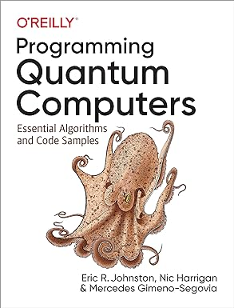

Ingressar na área
Ter uma Graduação em Ciência da Computação,
Física ou Matemática, são um ponto fundamental para começar na área.
Adquira uma compreensão sólida dos princípios fundamentais da física quântica e da matemática
envolvida.Desenvolva habilidades em linguagens de programação relevantes, como Python,
e explore linguagens específicas para computação quântica, como Qiskit ou Cirq.
Plataformas como Coursera,
edX oferecem cursos de instituições de renome
sobre computação quântica.Iniciar pequenos projetos pessoais utilizando simuladores quânticos e,
posteriormente, experimentar em plataformas de computação quântica real. Participe de hackathons ou
eventos relacionados à computação quântica para colaborar com outros entusiastas
e profissionais da área.
Qiskit é um kit de desenvolvimento
de software de código aberto para trabalhar com computadores quânticos no nível de circuitos,
pulsos e algoritmos

"Programando Computadores Quânticos: Algoritmos Essenciais e Amostras de Código"
de Eric Johnston, Nic Harrigan, Mercedes Gimeno-Segovia
Setores beneficiados
| SETOR |
BENEFÍCIO |
| Finanças |
A computação quântica pode ser utilizada para otimizar investimentos e carteiras de
forma mais eficiente, lidando com uma grande quantidade de variações simultâneas. |
| Saúde |
A capacidade dos computadores quânticos de simular sistemas moleculares complexos pode
ser aplicada na descoberta de novos medicamentos e no entendimento de reações
químicas. |
| Logística |
A computação quântica pode ser empregada para otimização da logística, encontrando as
rotas mais eficientes para o transporte de mercadorias. |
| Inteligência Artificial |
Algoritmos quânticos podem acelerar o treinamento de modelos de aprendizado de máquina,
oferecendo vantagens em determinadas tarefas. |
Além desses setores a ciência da computação tem sido muito beneficado pela
computação quântica com:
Algoritmos Mais Eficientes:
Algoritmos têm potencial de resolução de certos tipos de problemas exponencialmente mais rápido do
que algoritmos clássicos, impactando diretamente a eficiência computacional.
Nova Abordagem em Segurança:
A criptografia quântica pode redesenhar os protocolos de segurança, tornando as comunicações
virtualmente impenetráveis, uma vez que exploram princípios quânticos intrínsecos.
Transformação em Machine Learning:
Um complemento fornecido por computadores quânticos pode revolucionar a capacidade de treinamento
e execução de modelos de aprendizado de máquina, abrindo portas para avanços significativos
nessa área.
Desenvolvimento de Novos Materiais:
Simulações quânticas podem ser usadas para desenvolver materiais com propriedades específicas,
beneficiando a ciência dos materiais e a indústria de fabricação.
Empresas que já investiram nessa tecnologia
A
Google disse recentemente que é “cautelosamente otimista” que seu novo processador quântico
Bristlecone, com 72 qubits, pode alcançar “supremacia quântica”. A supremacia quântica, como
alguns a chamam, acontecerá quando um computador quântico puder resolver um problema que um
supercomputador clássico não pode.
A
Intel produzido, com sucesso, os primeiros qubits de silício em escala industrial.
É um avanço que torna a computação quântica mais próxima da realidade.
A
IBM em seu experimento, demonstra que é possível para um computador quântico
superar as principais simulações clássicas. A equipe usou o processador quântico IBM Quantum
'Eagle' composto por 127 qubits supercondutores em um chip para gerar grandes estados
emaranhados que simulam a dinâmica dos spins em um modelo de material e preveem com precisão
propriedades como sua magnetização.
Essas sao alguas empresas que ja investiram na computação quântica e já
vem mostrando resultados